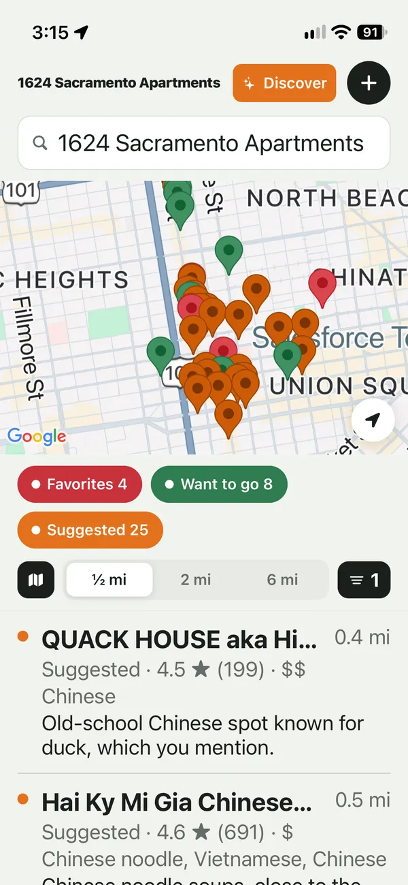
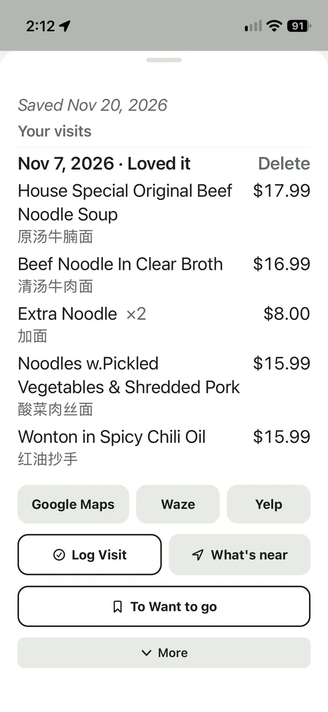

Nosh Next
Finds restaurants that match your taste, near wherever you are.
Download on the App Store
Free, no ads. iPhone now; Android is in testing.




What it does
- It learns what you like.Start with a few favorite places, and it builds a picture of your taste from them.
- Discover.Suggestions near you, ranked against your taste, each with a short reason.
- Save from anywhere.Share a link, a post, a screenshot or a photo of a storefront to Nosh Next, and it finds the place.
- Your lists on a map.Want to go and Favorites, with what's open now.
- Log visits.Add photos, a note, the bill (it reads the receipt) and a rating if you want one.
- Diets are rules.Vegetarian, vegan or gluten-free: places that don't fit are left out, not just ranked lower.
Get it
- On your iPhone:
Download on the App Store - Open Nosh Next and sign in with Apple, Google or your email. Email sign-in sends you a code; if it doesn't arrive in a minute, check your spam folder.
- On Android: the app is in a closed test on Google Play. To join, email martin.strell@gmail.com with your Google account address.
Tell me what you think
Good or bad, I want to hear it. Problems, confusing moments and ideas are all useful.
If you know me, message me directly. Otherwise, email martin.strell@gmail.com.